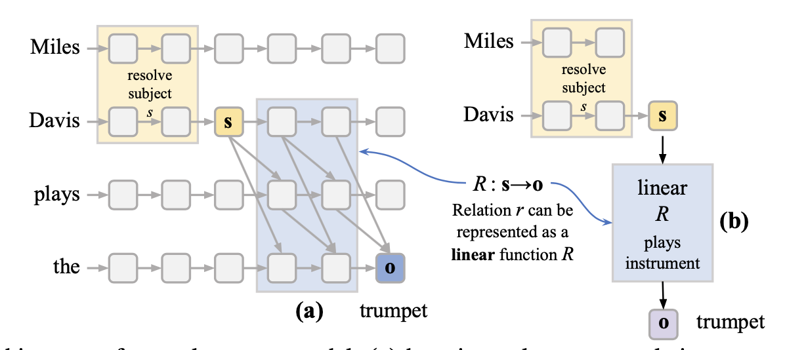
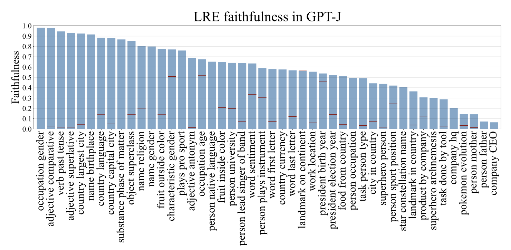
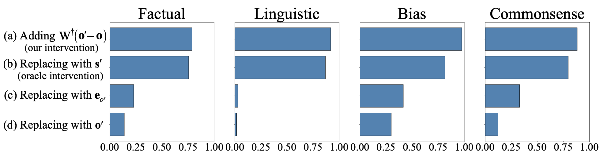

{header('Factual Association')}

<div><h5>October 15, 2024 • <em>Achyut Kowshik, Sheridan Feucht</em></h5>

    <p>
If you ask a (decent) LLM to complete the sentence "Coltrane plays the ___", 
it will probably say "tenor" or "saxophone". In order to accurately predict the next word,
the model has to be able to "understand" who John Coltrane is, and then retrieve information on what instrument he plays. 
But how does it do this? Where do LLMs store information about the world, and how do they 
process and retrieve it? These papers on <i>factual assocation</i> try to answer that question. 


<h2>Linear Associative Memory</h2>
<p>
A lot of current work in factual association builds off the foundational idea of 
<i>linear associative memory</i>. In <a href="https://rewriting.csail.mit.edu/">one of David's PhD papers</a>, 
they refer to <a href="https://ieeexplore.ieee.org/document/5009138">this 1972 paper</a>
that illustrates how you can use a matrix \( M\) to store pairs of vectors \( (k_i, v_i) \). 
This can approximately done with any kind of matrix.  

\[
v_i \approx Wk_i
\]

You can actually do this retrieval perfectly if you have orthonormal keys. The way you 
do so is by constructing a matrix that is the sum of the outer products of every desired pair, \(v_ik_i^T \). 
Each one of these outer products is a rank one matrix that we can accumulate to create \( M \),
which has a rank equal to the number of pairs that it is storing. 

<!-- If \( M\) is an \(m\times n\) matrix, then we can store up to \( n \) pairs.  -->

\[
M \mathrel{\mathop:}= \sum_i v_ik_i^T 
\]

In practice, the authors refer to <a href="https://papers.baulab.info/papers/also/Kohonen-1973.pdf">Kohonen (1973)</a>,
which shows that you can store more keys than the maximum rank of the matrix if you allow them to be non-orthogonal, 
with some amount of error.

\[
W_0 \mathrel{\mathop:}= \underset{W}{\text{argmin}}\sum_i||v_i - Wk_i||^2
\]

<a href="https://rewriting.csail.mit.edu/">David et al.</a> come up with a way to 
pack a new \((k_*,v_*)\) pair in there by doing this minimization with 
the constraint that \( v_* = Wk_*\). They use this math to edit the convolutional weights of GANs so that they 
obey arbitrary user-defined rules, like making horses wear hats, or trees grow out of church towers.
But what if we can use this to understand fact retrieval in language models? 


<h2>ROME</h2>
<p>
    Achyut: Cover the basics of ROME 

<h3>Does Localization Inform Editing?</h3>
<p>
    A year or so later, some researchers from Google and UNC Chapel Hill wrote a response 
    to David's paper 
    Achyut todo: https://arxiv.org/abs/2301.04213


<h2>Dissecting Recall of Factual Associations</h2>
<p>
    Achyut: dissecting recall paper 

<h2>Linearity of Relation Decoding</h2>
<p>
    <a href="https://lre.baulab.info/">The last paper for today</a> from David's lab looks at 
    factual association from a slightly different angle. Based on the idea that factual 
    information is stored in early layers, they try to linearly approximate 
    the process by which an LLM would "read out" that information for its final output.
    This would only really work if models were near-linear when decoding relations. 
    
<p>
    Concretely, this means that the authors have to come up with some clever way to 
    get a weight matrix and bias that can be applied to a hidden state \(s\) to 
    output \(o\), the state right before the model outputs its answer. In the image 
    below, they basically want to skip over the entire blue part of model processing,
    going straight from \(s\) to \(o\). 

    

    The way that the authors ultimately build these approximators does not require 
    any gradient descent. If \(F(s,c)\) is the function the transformer is 
    typically performing to map \(s\) to \(c\), they take the first-order Taylor 
    approximation where \(W = \partial F/\partial s\): 

    \[ F(s,c) \approx F(s_0, c) + W(s - s_0) \]
    \[ F(s,c) \approx Ws + F(s_0, c) - Ws_0 \]
    
    This approximation is just an affine transformation, with a bias \( F(s_0, c) - Ws_0 \). 
    In practice, they calculate \(W\) by averaging the Jacobian of \( F \) for 
    a few examples \(s_i, o_i \). 
    
<h3>Are these LREs faithful?</h3>
<p>
    The authors calculate these approximations for a number of relations and measure 
    how <i>faithful</i> they are to the outputs of the original model. In other words,
    what fraction of the time do they output the same token as the actual model?

    

    Their Figure 3 shows that some relations can be approximated extremely well in this way, like 
    encodings of gender bias (occupation -> gender), whereas relations like (company -> CEO) 
    are more difficult to approximate. This indicates that these relations are calculated 
    in some non-linear manner; they require a bit more calculation to get out. 

<h3>Are these LREs causal?</h3>
    If these LREs are actually causally related to model behavior, then we should 
    be able to use them to manipulate model outputs.
    They do an experiment where they try to change the output associated with a subject 
    (e.g. make the model say that Miles Davis plays the guitar). If you have 
    \((s, r, o) = \) (Miles Davis, plays instrument, trumpet) and 
    \((s', r, o') = \) (Cat Stevens, plays instrument, guitar), then 
    
    The authors derive that you should be able to add a special vector \( \Delta s = W^{-1}(o'-o)\) to \( s \)
    to make it look like \(s'\), resulting in the model outputting \(o'\). This only works 
    if \(W\) is causally related to model behavior. And in fact they show that their 
    approach actually works slightly better than just directly substituting \(s'\) in place of \(s\). 
    This is a really good sign that \(W\) reads relational information in the same way 
    that the model does itself. 

    

<h3>Bonus: Identifying Linear Relational Concepts</h3>
    A little while after this paper was released, researchers at University College London 
    built on their work to create linear relational concepts (LRCs). They create an LRE 
    for some relation and get a low-rank pseudo-inverse of the LRE, which is just \( W^\dagger \) 
    from the original paper. When they apply that \( W^\dagger \) to "York" or "Shanghai",
    they get specific vectors that represent the concepts "Located in England" and "Located in China."
    Then, given some hidden state representation of a place, e.g. "Boston", they dot its representation 
    with every "Located in" vector. Whichever vector has the highest dot product they take as the answer. 
    They argue that this method works a lot better than probing those hidden states using an SVM. 


<h2>Demo</h2>

Sheridan/Achyut todo: make a quick ROME causal tracing (editing?) demo using nnsight

{footer()}
